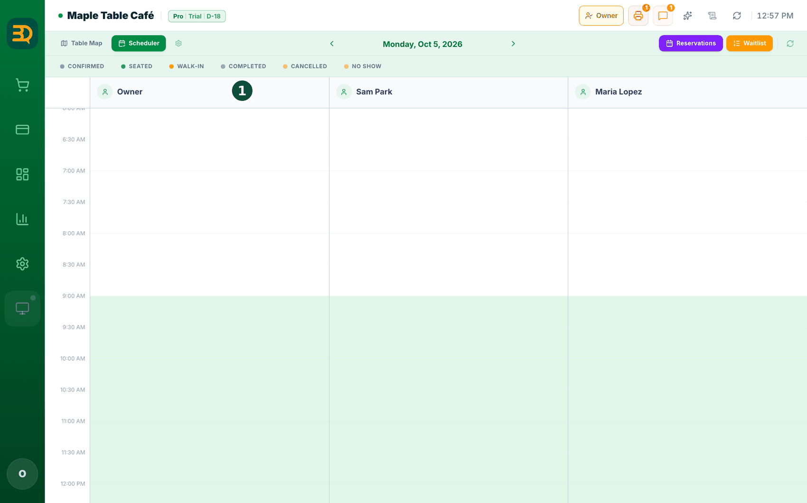
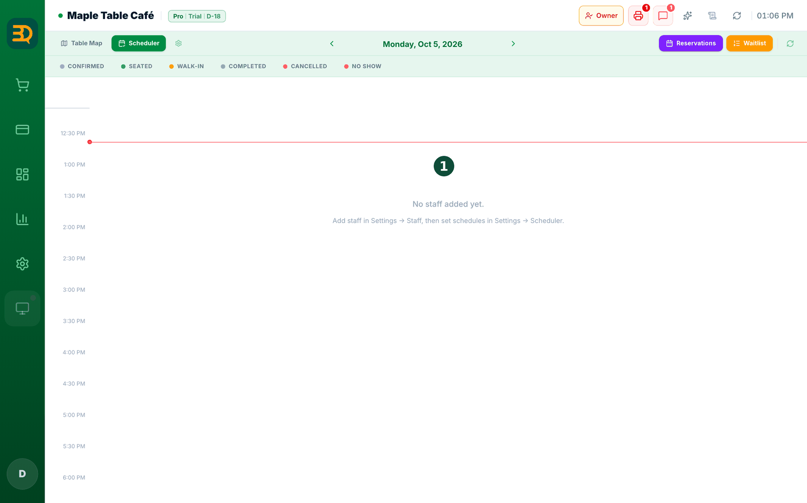
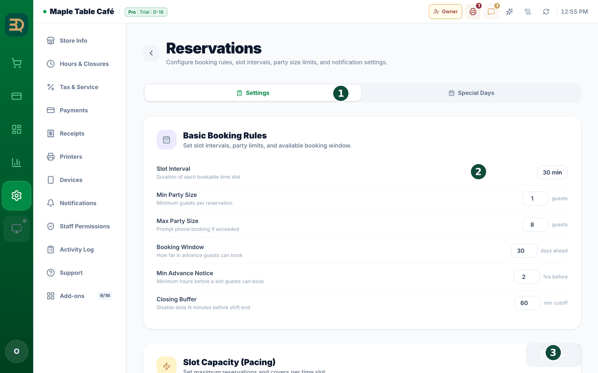
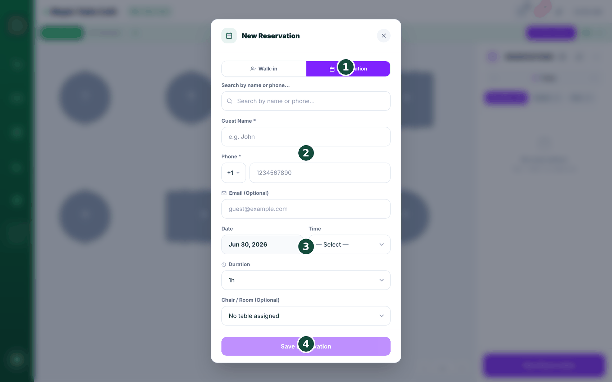
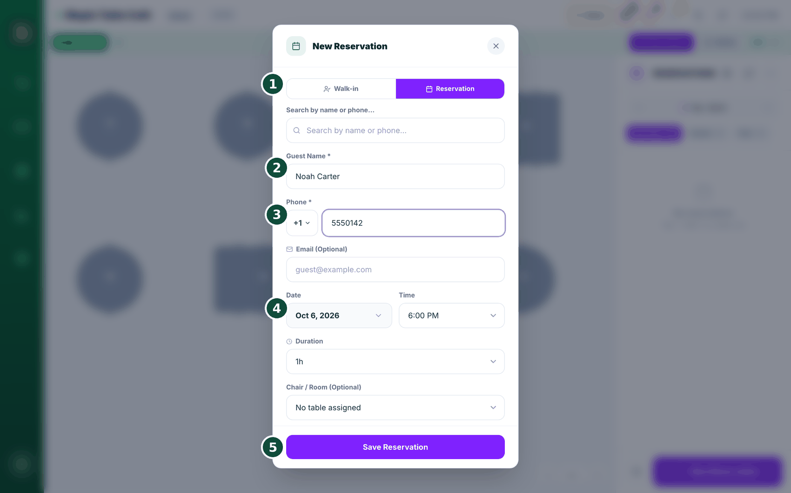
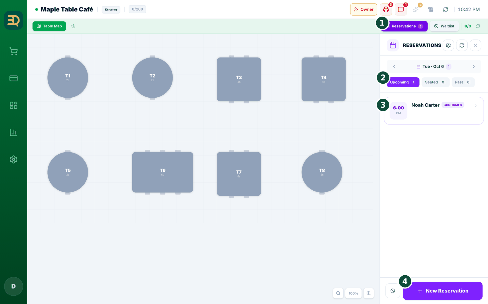
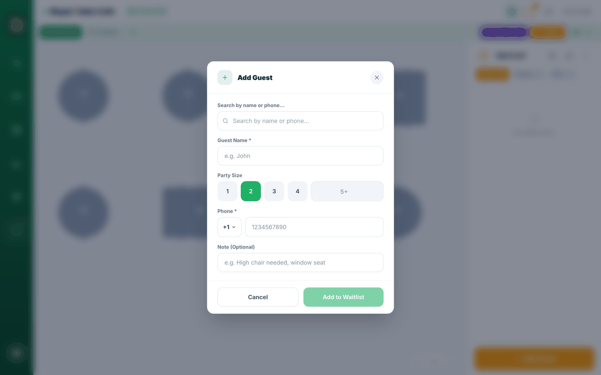

16예약 & 스케줄러
예약은 손님이 오기 전에 테이블이나 시간을 미리 잡아 두는 것입니다. 모든 예약을 한 곳에 모아 둘 수 있습니다. 하나 추가해 보겠습니다.
예약은 Settings › Add-ons › Reservations에서 켭니다(스위치를 눌러 주세요). 먼저 Tables가 켜져 있어야 합니다 — Tables가 꺼져 있으면 Enable Both 팝업이 표시되며, 그대로 누르면 됩니다. 미용실·스파의 직원·시간 예약은 같은 곳에 있는 Scheduler(스케줄러) 애드온으로 받으며, Pro 애드온입니다.
시작 전에: Settings › Hours & Closures에서 영업시간을 정해 주세요. 예약은 영업 중인 시프트 안에 드는 시간만 표시합니다 — 따라서 어떤 시간이 보이지 않으면 먼저 영업시간을 확인해 주세요.




- 예약 페이지를 엽니다. Table Map에서 Reservations(오른쪽 위)를 탭하거나, 위쪽 Scheduler(스케줄러) 탭을 엽니다. (Scheduler 탭은 Pro 플랜에서 Scheduler 애드온을 켠 경우에만 표시됩니다.)
- 달력에서 원하는 날을 탭합니다.
- New Reservation을 탭합니다. 양식이 열립니다.

- 손님 이름(Guest Name), 전화(Phone)(둘 다 필수), 날짜(Date), 시간(Time)을 입력합니다. 이메일(Email)은 선택이고, 소요 시간(Duration)은 기본 1시간입니다. 식당·카페 같은 테이블 매장에서는 인원(Guests)도 선택합니다(1~4명, 5명 이상은 직접 입력). 미용실·스파 형태의 매장에는 인원 칸이 없습니다.
- 선택 사항: 테이블(Table)(미용실·스파는 Chair / Room)과 직원(Staff)을 선택하고 메모(Note)를 추가합니다. 미용실이나 스파라면 직원을 선택하는 것이 가장 중요합니다. 직원 칸은 등록된 직원이 한 명 이상 있을 때만 표시됩니다.
- Save를 탭합니다. 손님은 "예약되었습니다" 확인을 자동으로 받습니다 — 설정한 방식에 따라 이메일, SMS, WhatsApp으로 전달됩니다.

- 예약 손님이 도착하면 예약 카드를 열고 Check In을 탭합니다. Seated로 바뀝니다 (필요하면 테이블도 배정합니다).
- 예약 없이 들어온 손님이 있다면 Walk-in 옵션을 탭합니다 — 바로 손님을 앉힙니다.
설정(Settings) › 예약(Reservations) › Settings 의 Booking Policy & Guest Portal 카드에서 Auto No-Show on Close(마감 시 자동 노쇼 처리)를 켜 주세요. 켜면 "마감할 때 그날 확정 상태로 남아있는 예약이 자동으로 노쇼로 처리되고, 각 손님에게 사유를 안내하는 이메일이 발송됩니다." 기본값은 꺼짐입니다. 처리 대상은 아직 Confirmed(확정)로 남아 있는 예약뿐이며, 착석·완료·취소된 예약은 그대로 둡니다. 같은 날을 다시 마감해도 손님에게 메일이 두 번 발송되지 않습니다.손님이 받는 메일은 나무라는 어조가 아닙니다. 제목은 "We couldn't confirm your visit"(방문을 확인하지 못했습니다)이며, 자리를 비워 두었지만 도착을 확인하지 못해 기록을 남겼다는 사실과, 잘못되었다면 매장에 연락해 달라는 안내가 담겨 있습니다.
예약 기능이 기본 내장. 두 번째 앱도, 추가 비용도 필요하지 않습니다. 식당은 테이블을 예약하고, 미용실과 스파는 직원 시간을 예약합니다 — 모두 같은 달력에서 관리합니다.
예약 계산기 — 예약 테이블과 워크인 테이블 나누기
예약 계산기는 시프트(영업 시간대)마다 테이블을 예약용(초록)과 워크인용(회색)으로 나누고, 그 설정으로 받을 수 있는 예약 팀 수와 시작 시각을 계산합니다. 예약은 예약용 테이블만 채우고 워크인 테이블은 비어 있으므로, 예약 때문에 그냥 오신 손님의 자리가 사라지는 일이 없습니다.
Settings › Reservations › Settings 탭 맨 위의 Reservation calculator 카드입니다. Reservations 애드온이 켜져 있어야 합니다.
- 위쪽 시프트 탭에서 설정할 시프트를 고릅니다. 탭마다 "최대 N팀 · 시작 시각"이 표시됩니다. 시프트는
Hours & Closures에서 정한 것을 따릅니다. - 그 시프트에서 예약을 받지 않으려면 Take reservations(예약 받기) 스위치를 끕니다. 꺼 둔 시프트는 No reservations(예약 안 받음)로 표시됩니다.
- 좌석 크기별 줄에서 테이블 칸을 탭하거나 − / +를 눌러 예약용 테이블 수를 정합니다. 빠르게 정하려면 Quick split의 All for reservations · More (70%) · Half · Fewer (30%)를 누릅니다. 아래 막대에 예약과 워크인의 비율이 표시됩니다.
- Time per party(1팀 이용 시간)를 정합니다. Same for every party(모든 팀 같게)는 값 하나를 쓰고, By table size(테이블 크기별)는 크기마다 분을 입력합니다(15분 이상). 예약 인원이 앉을 수 있는 가장 작은 테이블의 시간이 적용되며, 가장 큰 테이블보다 큰 일행은 가장 큰 테이블의 시간이 적용됩니다. 이 값으로 Last booking(마지막 예약)이 "시프트 종료 − 이용 시간"으로 계산되어 표시됩니다.
- Booking times every(예약 시각 간격)에서 예약 시각을 몇 분마다 시작할지 고릅니다(예: 30분). 모든 시프트에 공통으로 적용됩니다.
- Shift occupancy(시프트 점유)에서 현재 설정의 예약용 테이블 수, 회전 수(Turns), 최대 팀 수, 예약 시작 시각을 미리 볼 수 있습니다. 설정을 확인하기 위한 시뮬레이션이며 실제 예약이 아닙니다.
- 설정 화면의 공통 Save로 저장합니다. 이 카드에는 저장 버튼이 따로 없습니다. 저장하기 전에는 카드에 Preview(미리보기) 표시와 "아직 사용 중이 아닙니다 — 저장하면 테이블 기준으로 예약을 받기 시작합니다" 취지의 안내(Not in use yet)가 나옵니다.
예약을 저장할 때 나오는 안내
직원이 예약 화면에서 예약을 저장할 때 자리가 겹치거나 영업시간 밖이어도 예약은 저장됩니다. 대신 그 사실을 화면에 알려 드립니다.
- 자리가 겹칠 때: 노란 알림 "저장됨 — 자리가 겹칩니다"(Saved — seats overlap)와 함께 이유가 하나 표시됩니다 — 그 시간에 그 인원이 앉을 빈 테이블이 없음 / 그 시간 예약이 이미 꽉 참 / 예약을 받는 시간이 아님 / 자리를 확인하지 못함. 어느 경우에나 예약은 저장되어 있으니, 안내에 따라 테이블을 조정하거나 확인해 주세요.
- 영업시간 밖일 때: 저장 전에 "영업시간 밖의 시각입니다" 확인 창이 나옵니다. 그대로 진행하면 예약이 저장되고, 창이 닫힌 뒤에도 "영업시간 밖으로 예약됨" 알림이 남습니다.
- 휴무일에 새 예약을 만들 때: 시간 칸 아래에 "휴무일 — 저장하면 경고가 뜹니다"라는 안내가 표시됩니다.
손님이 온라인으로 예약할 때
Settings › Reservations › Settings의 Booking Policy & Guest Portal 카드에 있는 Auto-confirm Reservations 스위치 아래에 현재 동작이 적혀 있습니다. 켜면 "새 예약이 바로 확정됩니다", 끄면 "포스에서 직원이 예약을 하나씩 승인합니다"입니다. 끄면 손님이 온라인으로 넣은 예약을 직원이 승인할 때까지 확정되지 않습니다.대기열(Waitlist)
테이블을 기다리는 줄입니다. 대기열은 빈 테이블을 기다리는 손님들의 줄입니다. BrewDesk가 줄을 관리하고, 테이블이 준비되는 순간 손님에게 문자를 보냅니다 — 그래서 손님이 입구에 몰리지 않습니다.
Settings › Add-ons › Waitlist에서 켭니다(스위치를 눌러 주세요). 먼저 Tables가 켜져 있어야 합니다 — 팝업이 표시되면 Enable Both를 눌러 주세요.

- Waitlist를 엽니다. Table Map에서 Waitlist(오른쪽 위)를 탭합니다.
- Add Guest를 탭합니다. 작은 양식이 열립니다.
- 손님의 이름(Name), 인원(Party size), 전화(Phone)(문자를 보낼 수 있도록)를 입력합니다. 메모를 추가해도 되며, 저장합니다.
- 테이블이 비면 해당 손님을 찾아 Notify를 탭합니다. 손님은 "테이블이 준비되었습니다" 문자(SMS 또는 WhatsApp)를 받습니다.
- 그런 다음 자리에 앉히면 완료됩니다.
Settings › Store info에 이미 등록해 둔 사진을 그대로 사용하므로 따로 올릴 필요가 없습니다. 전화번호 칸도 매장 국가의 국가번호(+82, +1, +66 …)로 미리 맞춰져 있어서 손님은 번호만 입력하면 됩니다.